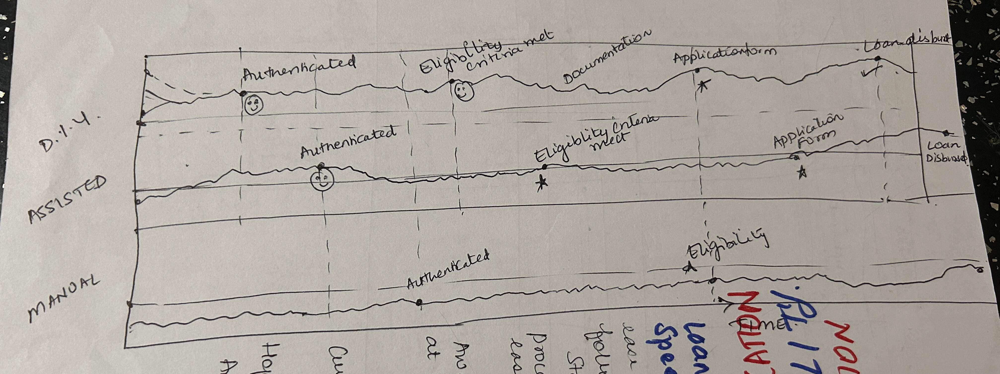
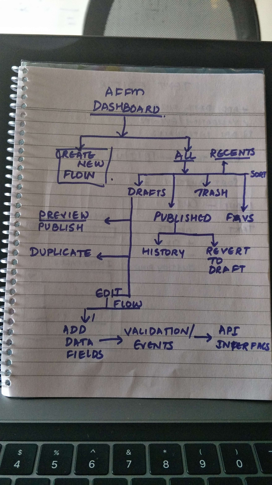
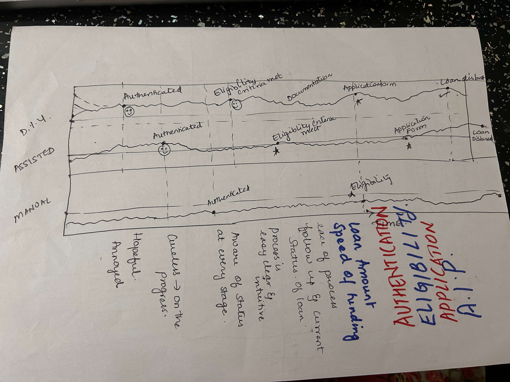
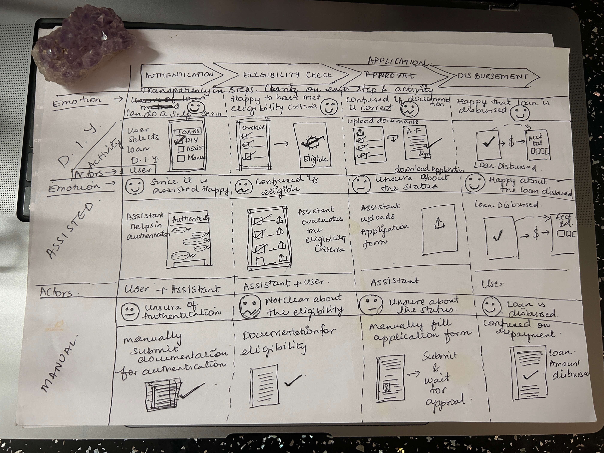

Case Study: DIY Loan Journey
Introduction
The DIY Loan Journey was initiated in 2019 to address the challenges loan applicants faced in understanding the loan process. The primary objective was to create an intuitive experience that empowers users to independently navigate loan applications.
My Role: UX designer responsible for user research, wireframes, prototyping, and usability testing.
Problem Statement
Users struggled with:
- Understanding loan terminology and steps.
- Long approval times due to incomplete or incorrect submissions.
- Lack of transparency in the process.
Process
- User Research: Conducted interviews with loan applicants and bank representatives to identify pain points.
- User Personas: Created personas representing typical loan applicants to guide design decisions.
- Journey Mapping: Visualized the current and ideal loan journey to highlight improvements.
Design Solutions
Key features included:
- Step-by-Step Guidance: Simplified the process with clear milestones and progress indicators.
- Document Checklist: Provided an interactive checklist to reduce errors.
- Educational Tooltips: Explained loan-related terms in layman’s language.
Challenges and Iterations
Translating complex regulations into user-friendly interfaces required multiple design iterations. Usability testing revealed the need for better navigation and faster load times.
Outcome
The project resulted in:
- A 40% increase in loan application completion rates within three months.
- Positive feedback highlighting improved understanding and confidence of users in managing their loan journeys.